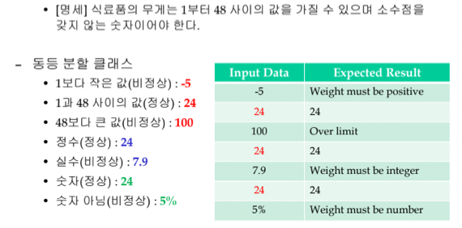
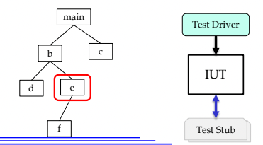
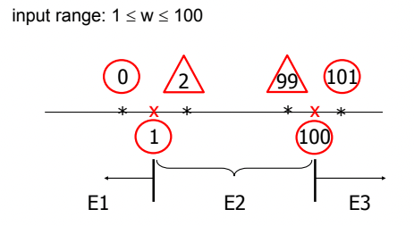

충남대학교 컴퓨터공학과 김현수 교수님의 "소프트웨어 공학" 강의를 필기한 내용입니다.
다소 잘못된 내용과 구어적 표현 이 포함되어 있을 수 있습니다.
Failure, Defect, Error
- Failure(실패) : 시스템이 실행되는 도중 시스템이 받아들일 수 없는 행위가 발생한 경우
- 명세와 실행동작의 차이라고도 할 수 있고
- 이것을 기준으로 Reliability(신뢰도) 를 계산한다
- Defect(결함) : 장애의 발생에 기여하거나 잠재적으로 기여할 수 있는 시스템에서의 결함
- Error(오류) : 시스템의 결함으로 이끄는 소프트웨어 개발자의 잘못이나 결정
- 이렇게 말하면 위 세가지가 뭔차이가 있는지 약간 헷갈리는데
- Failure는 결과적인 측면이다 - 시스템이 오작동한 결과를 말하는 것
- Defect은 시스템에서의 원인이다 - 시스템이 오작동하게된 시스템에서의 원인을 말하는 것
- Error는 개발자측면에서의 원인이다 - 시스템이 오작동하게된 개발자의 잘못을 말하는 것
Testing
- 뭐 알다시피 시스템의 실패로 이끄는 결함이나 오류를 찾거나 명세와 구현이 일치함을 검증하는 과정을 말함
- 그래서 목적은 크게 결함 / 오류 찾기
- 명세 충족 확인
- 설계나 구현을 검증하는 것으로 생각할 수 있다
Test Case
- 입력값과 해당 입력값에 대한 예상되는 결과
- 얘네가 일치한다면 해당 Test가 통과한 것이고 아니면 통과하지 못한것(실패)
- 테케는 보통 이런것들로 이루어진다
- 이름(ID)
- 대상 - 뭐 측정한 method나 클래스, 서브시스템 등
- 조건 - 테스트 대상이 실행되기위한 조건(테스트를 가능하게 하는 조건)
- 입력
- 예상 결과
- 여기서 Test Oracle은 테스트의 성공 / 실패를 판단하는 매커니즘 - 예를들면 예상결과와 실제 결과가 일치하는지 판단하는 것
좋은 테스팅
- Test Effectively(효과적인 테스트) : 결함을 최대한 많이 발견하면 당연히 좋겠지
- Test Efficiently(효율적인 테스트) : 최대한 적은 노력과 테스트케이스로 최대한 많은 결함을 찾아내는 것
- 효과적 / 효율적인 테스트를 하지 못하면 배포 후의 유지보수비용이 늘어 금전적인 손해가 나거나 극단적으로는 사고가 나 인명피해가 발생하기도 하기 때문에 중허다
결함의 종류(사례)
- Incorrect Logical Conditions : 반복이나 분기의 조건이 잘못된 경우
- 뭐 동등 분할 기법이나 경계값 분석 기법을 사용해서 찾아내거나
- 조건식에 사용되는 변수의 입력을 추적해보랜다
- 제어구조의 잘못된 부분에서 계산 수행 : 프로그램이 수행하지 않아야 할 작업을 수행하거나 수행해야될것을 수행하지 않은 경우
- 반복이나 분기에서 작업이 부적절하게 제외되거나 포함되는 경우가 많댄다
- 이런건 반복 횟수를 특정하는(정확히 0번, 1번, 혹은 n번 돌게 하는) 테스트케이스를 설계함으로 결함을 찾는데 도움이 될 수 있댄다
- NULL을 처리하지 않음 : 제곧내
- Off-by-one : 1과 관련된것 - 값이 부적절하게 1이 더해지거나 빼지는 경우, 혹은 반복이 한번 더 돌더나 덜 도는 것
- Overflow : 자료형의 범위를 고려하지 않고 사용한 경우
- 부동소수점의 값이 같다고 판단하는 경우 : 부동소수점의 경우 값이 정확히 같을때보다 다를 확률이 더 많다 - 따라서 부동소수점의 경우에는 일치여부가 아니라 대소비교로 조건문을 줘야 한다
테스팅 기법
- Black Box Testing : 얘는 입력값에 따른 예상 결과를 내부 논리구조를 생각하지 않고 선정하는 것을 의미한다
- 여기에는 Equivalence partitioning과 Boundary Value Analysis가 있다
Equivalence Partitioning
- Equivalence Partitioning(동등 분할 기법) 은
- 동치 클래스 결정을 하고
- 동치 클래스 각각에 대해 그 안에서 테스트케이스 각각을 선정하는 방법이다
- 뭔 소린지는 예시를 들어서 설명하면

- 일단 1부터 48사이의 정수가 정상 입력값이니까 1부터 48 사이의 정수가 정상 클래스가 되는거고
- 1부터 48 사이의 정수가 아닌 범위는 1보다 작은 정수, 48보다 큰 정수, 실수, 숫자가 아닌 값 정도로 나눌 수 있고 얘네 각각이 비정상 클래스가 되는 것이다
- 이제 이 클래스들에서 하나씩 테케 입력을 고르고 거기에 따른 예상되는 출력이 나오는지 확인하면 되는 것
- 위 예제에서 봤듯이 명세에 따라 값의 범위를 나누고 각각의 범위에서 테케를 고르는 방식으로 진행되는데
- 명세에 따라 값의 범위를 나누는 것을 동치 클래스를 결정한다고 한다
- 동치 클래스는 우선 클래스는 그냥 집합으로 이해하면 되고 그 클래스에 들어가는 값들은 전부 동등하다 - 즉, 같은 출력을 내고 같은 방식으로 작동하는 값들의 집합을 의미하게 된다
- 만일 동치 클래스의 값들이 다른방식으로 작동한다면 그건 동치 클래스를 잘못 결정한거임
- 따라서 동치 클래스에서는 어떤 값을 선택해도 동일하기 때문에 아무 값이나 골라서 테케 입력으로 선정하는거임
Test Driver, Stub

- 일단 프로그램의 구성요소중 하나(메소드 등)를 다른것과의 의존성을 고려하지 않고 테스트하는 것을 Unit Test라고 하는데
- Unit test는 main함수를 실행시킬 수 없기 때문에 main함수를 대신해서 해당 부분을 실행시켜주는 놈을 Test Driver라고 하고
- 만일 그 부분이 다른 함수를 필요로 한다면 그 함수를 대신해서 mock값을 대신 제공해주는 것을 Test Stub이라고 한다
- 그니까 위 그림에서는 e를 테스트하려고 할때 f를 필요로 하지만 f는 동작시킬 수 없기 때문에 f의 반환값또한 테스트 이전에 제공해주는 기능을 하는 라이브러리를 말한다
- JUnit의 when()메소드로 특정 함수의 반환값을 지정해줄 수 있었자네 - 이런게 Test Stub 이 되는거임
Boundary Value Analysis
- Boundary Value Analysis(경계값 분석, BVA) 는 결함이 보통 경계 부근에서 발견되기 때문에 경계 부근을 집중적으로 테스트하는 것을 말한다

- 따라서 위 그림처럼 1, 100이 경계니까 그 부근인 0, 101을 비유효 경계 값(경계와 근접한 비정상 입력값)으로 하고 1, 100 이외에도 2, 99정도까지 유효 경계 값(경계와 근접한 정상 입력값)으로 선정하여 테스트하게 된다